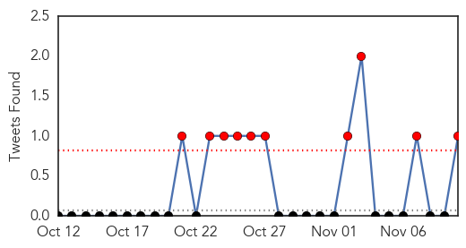
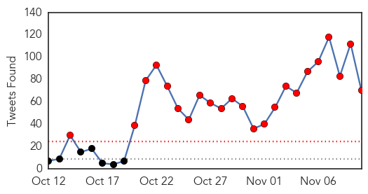
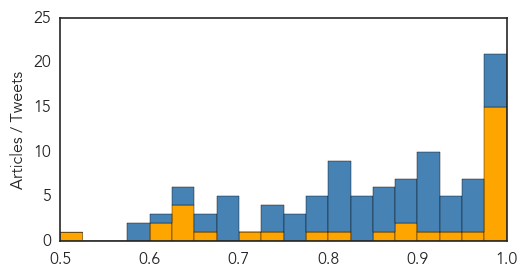

Dengue Fever
30-Day Web Trend
0 alerts, 0 warnings

30-Day Twitter Trend
10 alerts, 0 warnings

Article Locations

Article Confidences

Top Articles:
- 0.994
- 101 cases of dengue fever confirmed on Hawaii Island
- 0.987
- Health department: Now 27 cases of dengue fever on the Big Island
- 0.983
- Dengue Fever Information Update – Public Meetings Begin Tonight
- 0.980
- ‘Fight the Bite’
- 0.961
- ‘Fight the Bite’: State starts dengue fever outreach as cases hit 27
- 0.960
- Dengue fever outbreak on Hawaii Island widens
- 0.956
- State launches ‘Fight the Bite’ campaign to stop dengue fever in Hawaii
- 0.886
- State begins new anti-bite campaign
- 0.703
- Doctors warn of dengue risk to pregnant women - Viet Nam
- 0.683
- Holiday Epidemics: The El Niño Warning
- 0.637
- Health department confirms dengue fever case in East Oahu
- 0.624
- Children’s lives at stake as El Niño strengthens
- 0.579
- Children’s lives at stake as El Niño strengthens: UNICEF
- 0.575
- Children’s lives at stake as El Niño strengthens: Unicef
- 0.566
- Children's lives at stake as El Niño strengthens: UNICEF
- 0.561
- El Nino threatens 11 million children in Africa with hunger, disease-U.N.
- 0.501
- Millions of children’s lives at stake as El Niño strengthens, UNICEF ‘wake-up call’ report warns
Top Tweets:
- 0.511
- Flavivirus news: Dengue down in Davao No outbreak in Dau - Outbreak News Today: Outbreak News ... https://t.co/IHnjJRQmp7 pathogenposse
Ebola
30-Day Web Trend
2 alerts, 0 warnings

30-Day Twitter Trend
23 alerts, 0 warnings

Article Locations

Article Confidences
Top Articles:
- 1.000
- Sierra Leone Declared Ebola-Free
- 0.999
- End of Ebola Epidemic in Sierra Leone
- 0.999
- Sierra Leone officially Ebola free
- 0.998
- Ebola remains in Guinea, where the outbreak began
- 0.998
- Woman in Africa Survives Double Whammy of Ebola, Stroke
- 0.998
- Sierra Leone lauded for halting spread of Ebola
- 0.998
- Chinese Ebola doctors to leave for Liberia, Guinea and Sierra Leone
- 0.998
- Jubilation in Freetown as Sierra Leone declared Ebola-free : Frost Illustrated
- 0.997
- Ebola remains in Guinea, where the outbreak began - MyNorthwest
- 0.996
- It’s Official, No More Ebola in Sierra Leone
- 0.995
- When will the true Ebola heroes be recognized?, by Moshood Isah -
- 0.991
- Ebola outbreak: Sierra Leone declared free of disease
- 0.990
- Group of Liberians in Michiana look to help in the effort to contain Ebola virus from spreading
- 0.984
- Tourism hopes for Sierra Leone as country declared Ebola free
- 0.978
- Ebola remains in small Guinea villages, where community resistance is a challenge
- 0.966
- Solar Light Vigil and March in Sierra Leone on the eve of countdown to Zero (...)
- 0.937
- Ebola remains in Guinea, where the outbreak began
- 0.909
- Ron Klain, The Ebola Czar Appointed By President Barack Obama To Leave Post By 1st March
- 0.891
- New grant from Rockefeller Foundation to boost the International Growth Centre's work to strengthen Sierra Leone's national health system post-Ebola outbreak
- 0.889
- Cleveland man who faked Ebola scare gets probation
- 0.870
- AU Chairperson Congratulates Body Against Ebola
- 0.812
- [Nine-12-Project-Nashville] America as we never want it to be
- 0.798
- Sierra Leone: As Ebola outbreak ends, President Koroma Appeals for Sustainable Zero infection
- 0.746
- Missionaries head back to West Africa after Ebola outbreak
- 0.707
- Missionaries head back to West Africa after Ebola outbreak
- 0.653
- Liberian president slams cabinet for cash birthday gift
- 0.636
- Status of Emergency Obstetric and Newborn Care Consultative Conference Kicks off in Freetown November 12, 2015
- 0.629
- Ebola fight soldier and maternity care campaigner both awarded the OBE
- 0.628
- Africa is the Western world's testing ground for microchip implants, weaponized viruses and experimental vaccines
- 0.625
- Bob lends a hand to help in Pacific drought
- 0.623
- Nigeria's Primary Healthcare Centres In Bad State
- 0.614
- Nursing and Midwifery Education Practice Workshop kicks off in Freetown
- 0.501
- UGA receives $1.49 million grant for HIV, TB research training in Uganda
Top Tweets:
- 0.993
- United Nations health agency: Ebola virus transmission has been stopped in Sierra Leone - https://t.co/VHKySn9QET ebola
- 0.992
- World Health Organization declares Sierra Leone Ebola - https://t.co/UCDtcRhYij ebola
- 0.989
- World Health Organization praises Sierra Leone for stopping Ebola transmission - https://t.co/pBGlPevpAR ebola
- 0.981
- No New Cases of Ebola Infection in Past 42 Days Marks Sierra Leone Free of Ebola Epidemic - https://t.co/1s90ZNKp3P ebola
- 0.980
- Sierra Leone lauded for halting spread of Ebola - https://t.co/qrk5L51RG3 ebola
- 0.980
- Ebola outbreak ends in Sierra Leone - https://t.co/T1BqWTwTAi ebola
- 0.974
- End of Ebola Epidemic in Sierra Leone - https://t.co/6AB8tube3d ebola
- 0.961
- Sierra Leone celebrates end of Ebola epidemic - https://t.co/TMHVickuyT ebola
- 0.960
- Ebola Update 22 - Sierra Leone - https://t.co/7k3PzZ8UtS ebola
- 0.957
- WHO declares Sierra Leone Ebola-free: All you want to know about Ebola - https://t.co/T6ltJYqoGz ebola
- 0.955
- Missionaries head back to West Africa after Ebola outbreak - https://t.co/RYTJbBUlWm ebola
- 0.954
- No Ebola Cases in Morocco Health Ministry Says - https://t.co/fSaieEXqDY ebola
- 0.950
- Missionaries head back to West Africa after Ebola outbreak - Daily Herald https://t.co/KdPqNq7FZu ebola EVD
- 0.948
- Blood kinetics of Ebola virus in survivors and nonsurvivors - https://t.co/U0UDqykzwH ebola
- 0.928
- Sierra Leone celebrates end of Ebola - https://t.co/3JHS8yU02s ebola
- 0.926
- Meeting the Challenge of Ebola Virus Disease in a Holistic Manner by T - https://t.co/9xtRopRxml ebola
- 0.925
- WHO declares Sierra Leone Ebola free - https://t.co/aMGPCsKSa3 ebola
- 0.924
- Tourists Trickle Back To Ebola-Free Sierra Leone - https://t.co/5Ef1I6cDWY ebola
- 0.921
- Artificial Ebola virus slowed by large fullerene system - https://t.co/1vv3DBFlco ebola
- 0.917
- It's Official No More Ebola in Sierra Leone - https://t.co/ex3EpjIgg0 ebola
- 0.916
- Sierra Leone officially Ebola free - https://t.co/Sb3gSFn0aH ebola
- 0.912
- LDS missionaries head back to West Africa after Ebola outbreak - Casper Star-Tribune Online https://t.co/a9Mm3ZzCSq ebola EVD
- 0.911
- Sierra Leone is officially Ebola-free - https://t.co/VTmRkZWN1K ebola
- 0.908
- WHO Declares End to Ebola Crisis in Sierra Leone - https://t.co/BJiQ7Wdupm ebola
- 0.908
- Ebola Lingers in Guinea Where Outbreak Began - https://t.co/Hk6dDZK3YQ ebola
- 0.891
- Sierra Leone's tourist industry recovering from Ebola - https://t.co/5Q7KRwb4yK ebola
- 0.886
- Sierra Leone kids on their country being Ebola free - https://t.co/an9N1ZHaUG ebola
- 0.886
- LDS leader Elder Bednar visits Liberia missionaries return after Ebola outbreak - fox https://t.co/sM7Sa9sNoc ebola EVD
- 0.879
- Sierra Leone Now Declared Ebola Free By WHO - https://t.co/LBG2HmB8m6 ebola
- 0.877
- After Surviving Ebola Health Complications Persist for Many - https://t.co/pFWN7BjgHT ebola
- 0.871
- Penn Vet researchers find method to stop spread of viruses like Ebola - https://t.co/FEUYffVXNk ebola
- 0.871
- CDC recommends screening patients' travel/exposure hist. for Ebola malaria & other diseases. Quick eval. & treatment important
- 0.867
- Sierra Leone declared free of Ebola - https://t.co/nbsZcw3maX ebola
- 0.864
- Ebola-free Sierra Leone prepares return to international football - https://t.co/hWVxCo5C9L ebola
- 0.856
- Ebola epidemic model tracks effective eradication methods - https://t.co/kslChNqEYP ebola
- 0.842
- Ebola remains in Guinea where the outbreak began - WSB Radio https://t.co/Vf1BdO8Lg2 ebola EVD
- 0.842
- Ebola now a global threat - https://t.co/r6T5D3oD7h ebola
- 0.842
- Ebola boy - https://t.co/pJEyVRSB43 ebola
- 0.839
- 'Bye bye Ebola': Sierra Leone rapper's video hits the right note - https://t.co/7mTNb2mwzB ebola
- 0.826
- Jubilation in Freetown as Sierra Leone declared Ebola-free - https://t.co/ZxS5KANCsL ebola
- 0.819
- Dr. Mercola and Dr. Rowen on Ebola and Ozone Therapy - https://t.co/yXmPHVRleG ebola
- 0.811
- Ebola remains in Guinea where the outbreak began - https://t.co/bM5OiGUCsI ebola
- 0.811
- Ebola remains in Guinea where the outbreak began - https://t.co/RLrTDA6oft ebola
- 0.811
- Ebola remains in Guinea where the outbreak began - https://t.co/KjZrahphpP ebola
- 0.807
- Tourism hopes for Sierra Leone as country declared Ebola free - https://t.co/ifS89sy5oG ebola
- 0.807
- Ebola and tts control in Liberia 2014–2015 - https://t.co/x01DFuqrbF ebola
- 0.806
- U.K. lumps Russia together with ISIS and Ebola virus as major threats to its ... - ChristianToday https://t.co/W00zTAJw1J ebola EVD
- 0.802
- Woman in Africa Survives Double Whammy of Ebola Stroke - https://t.co/zz1gymPX7v ebola
- 0.799
- Irish fishing investigation Ebola-free Sierra Leone and South Sudan's tragedy - https://t.co/H92ZlrvSG3 ebola
- 0.792
- Ebola Vaccine Trial To Go Ahead - https://t.co/F623SS4sm5 ebola
Showing top 50 tweets...